Cocinar en el micro los langostinos y los piñones durante 2min.
Cocinar la pasta en el micro 9 min, añadir resto.
Ponemos el arroz en el estuche de vapor. Agregramos las verduras limpias y troceadas, rociamos con el aceite y distribuimos las pastillas de caldo desmenuzadas. Añadimos el agua, cerramos el estuche y cocinamos en el microondas a potencia máxima durante 14 minutos, o hasta que el arroz esté en su punto.
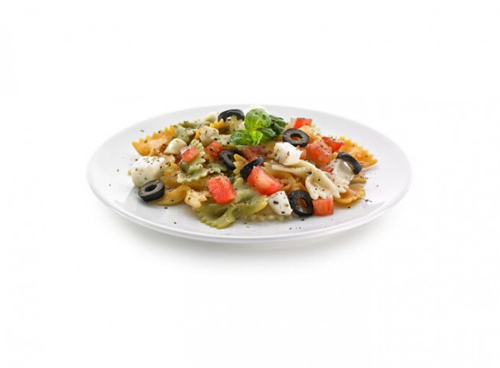Ponemos la pasta en el estuche de vapor. Una vez cocida, escúrrela y refréscala con abundante agua fría. Añade el tomate, la mozzarella y las olivas, y aliña. Sirve con unas hojas de albahaca fresca picada por encima.
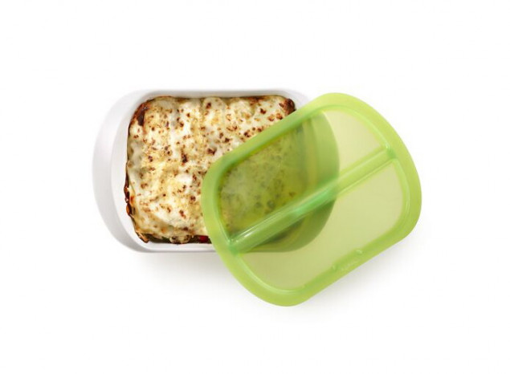1. Hierve las placas de lasaña o bien hidrátalas si usas placas de lasaña precocida. 2. Mientras tanto corta el pimiento rojo y el pimiento verde a tiras finas, el calabacín, la berenjena y el nabo a rodajas finas y los champiñones en láminas. 3. Añade los ingredientes en la bandeja en el siguiente orden para preparar la lasaña: primero una base de placas hidratadas, a continuación una capa de verduras junto con una pizca de sal y finalmente una capa de bechamel. Repite el procedimiento una vez más. 4. Termina con una capa más de placas de pasta y cúbrelas con un poco de bechamel, para que queden bien hidratadas durante la cocción. Cuece tapado en el horno 20 minutos a 200ºC. 5. Añade finalmente otra capa de bechamel y queso rallado por encima. 6. Cuece en modo grill, sin tapar, durante 5-6 minutos a 230ºC hasta que se gratine.
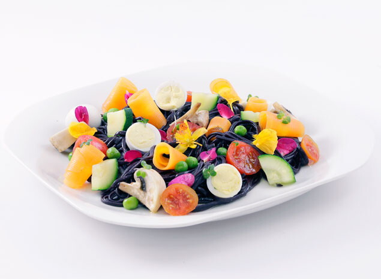Corta los champiñones en ¼, los calabacines en medias lunas, la zanahoria en rodajas finas y reserva.2 Introduce los noodles en el Pasta Cooker, cúbrelos con el agua y cocina por 6 minutos a máxima potencia (800W). El tiempo lo determinará las indicaciones del paquete de pasta.3 Una vez cocidos, escúrrelos y añade el resto de ingredientes Mezcla bien y cocina de nuevo al Microondas 2 minutos más a máxima potencia (800W).4 Por último, añade los huevos de codorniz cocidos cortados por la mitad y sirve.
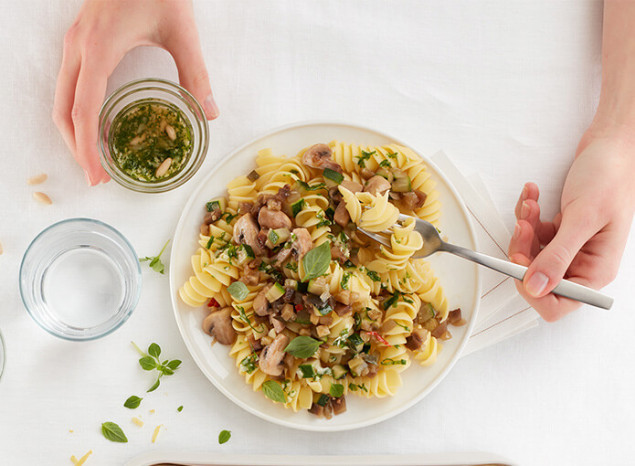Pica finamente la cebolla, el ajo y la pimienta de cayena e introdúcelos en el Quick Pasta Recipes Cooker junto a una cucharada de agua, sal y pimienta. Cuece en el microondas durante 2min. a máxima potencia (900W).2Corta la berenjena y el calabacín a cubos de 1 centímetro y los tomates cherry en mitades.3Retira el Quick Pasta Recipes Cooker del microondas y añádele a la cebolla, el ajo y la pimienta de cayena, la berenjena, el calabacín y los champiñones cortados. Cuece al microondas durante 3 min. a máxima potencia (900W).4Retira los vegetales del microondas y resérvalos.5Introduce 120g de fusili con 300 ml de agua en el Quick Pasta Recipes Cooker con un poco de sal, y cuece en el microondas durante 10 min. a máxima potencia (900W).6Para terminar la salsa, mezcla el tomate cherry junto con los vegetales, las hierbas aromáticas, la sal, la pimienta y el vinagre de Módena.7Retira la pasta del microondas y escurre el exceso de agua. Mezcla la pasta con la salsa, deja enfriar i listo para servir.
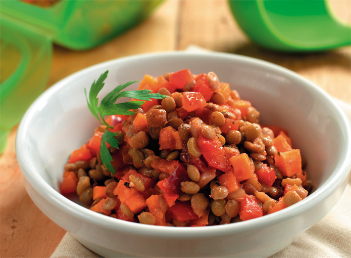1 Corta las verduras a daditos o trocitos pequeños e introdúcelos en el Estuche de Vapor Hondo junto con las lentejas cocidas, el tomate, el ajo y el laurel.2 Cubre con agua, salpimenta y cuece en el microondas a 800 W durante 10 minutos.3 Emplata y sirve con un chorrito de aceite de oliva. Esta receta se puede adaptar al Estuche de Vapor Hondo 3-4p duplicando la cantidad de los ingredientes y añadiendo dos minutos más a la cocción, controlándola.
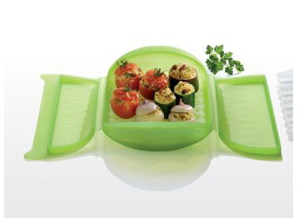Limpiar las verduras, despuntar el calabacín, cortarlo en 3 partes y vaciarlo con la ayuda de una cucharilla boleadora. Cortar la parte superior de los tomates y de las cebollas peladas y vaciar también el interior intentando no romper la verdura. Picar la pulpa obtenida. Introducir las cebollas enteras en el estuche con 100 ml d agua, cerrar y cocer en el microondas durante 4 minutos ( horno a 200ºC 10 min. ). Retirar, verter el agua sobre el cuscús en un bol y dejar que se hidrate. Introducir las veduritas picadas en el estuche junto con la cebolla tierna picada, las pasas y los piñones, salpimentar y rociar con el aceite. Cerrar y cocinar al microondas 3 minutos ( horno con estuche abierto a 200ºC, 6 min.). Mezclar las verduras con el cuscús, el comino, sal y pimienta y rellenar las verduras. Verter 100 ml de agua en el estuche, colocar encima la bandeja y disponer las verudras de forma ordenada. Cerrar y cocer en el microondas durante 5 minutos ( honro a 200ºC, unos 12 min.) hasta que las verudras estén tiernas.
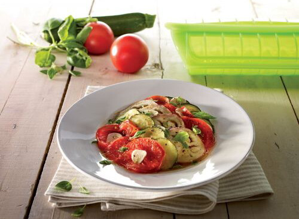1. Corta las verduras en rodajas. 2. Deposita las verduras dentro del Estuche de vapor por variedades intercalando por capas. 3. Lamina el ajo y pica las hierbas y espolvorea sobre las verduras. Sazona con sal y pimienta y riega con aceite de oliva. 4. Hornea a 180° C durante 15 minutos o cocina al microondas a potencia máxima durante 3-4 minutos.
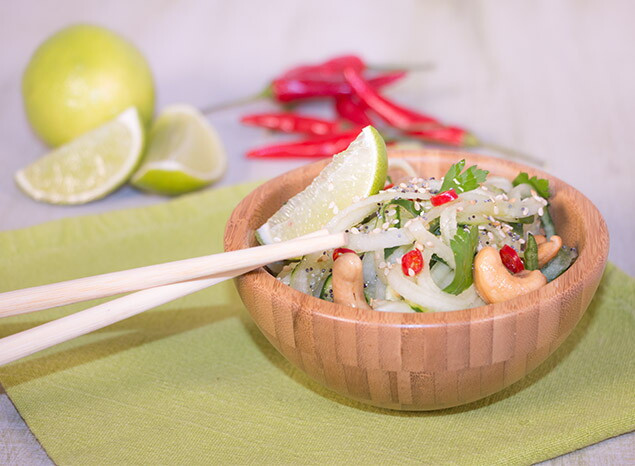1. Lava los pepinos e introdúcelos sin pelar en el cortador en espiral. Gira para obtener tus espirales de pepino. 2. Prepara una salsa mezclando la leche de coco, la ralladura de lima y 2 cdas de su zumo,la sal, el chile, el cilantro y el jenjibre. 3. Sirve las espirales de pepino con los anacardos y acompaña con la salsa para aderezar en el último momento. Consejos: Puedes agregar o sustituir otras hortalizas como zanahoria, chirivía... según tus preferencias. Éstas han de ser de ser frescas para que te faciliten el giro en el cortador. Receta apta para personas con intoleráncia a la lactosa y al gluten..
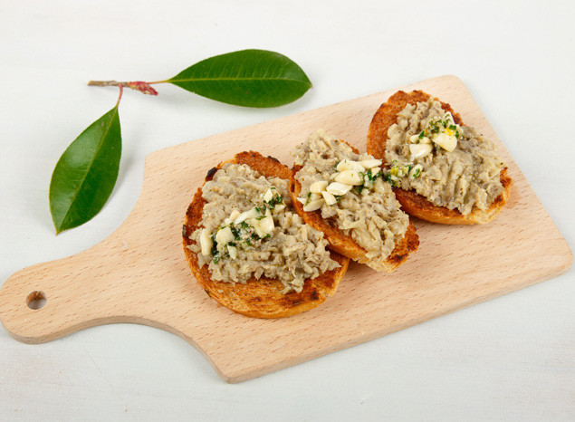1 Lava bien las berenjenas. Una vez limpias introdúcelas en el estuche vapor hondo y cocínalas en el microondas a 800w durante 7 minutos. Deben quedar bien hechas. 2 Cuando están frías, pélalas y reserva la pulpa. Aplasta la pulpa con un tenedor hasta que quede una textura que te guste. Échale el ajo bien picado, el yogur griego sin azúcar y dos cucharadas soperas de Tahin (pasta de sésamo). Y vamos mezclando. Servimos en un plato hondo con un chorrito de aceite de oliva virgen extra.
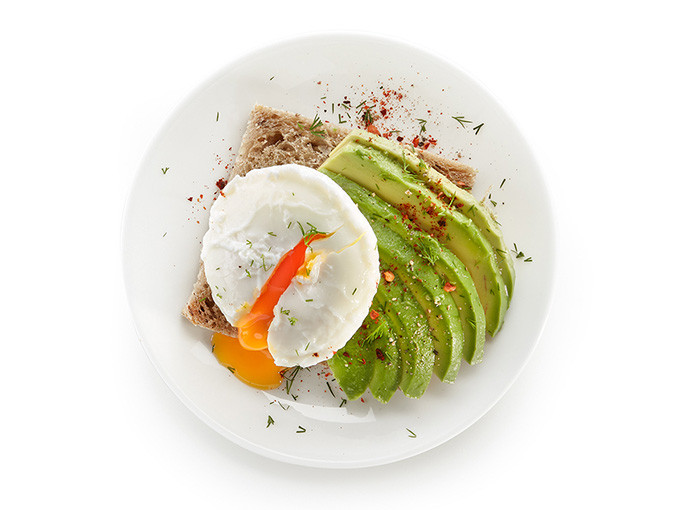1 Pon el agua a calendar que no llegue a los 100ºC (90ºC-95ºC). 2 Rompemos los huevos en el escalfador de huevos y los introducimos en al agua durante 3 minutos. 3 Tostamos el pan. Cortamos el aguacate en rodajas y lo colocamos sobre las tostadas, añadimos un chorrito de aceite de oliva y ponemos el huevo escalfado encima. 4 Salpimentamos y añadimos un poco de pimienta de cayena triturada.
Lo primero que tenemos que hacer es dejar los dátiles (deshuesados, claro) en remojo durante una noche entera. Al día siguiente echamos tanto los dátiles como el agua en el que han estado en remojo dentro del vaso de la batidora. Batimos hasta que se forme una pasta: ¡ojo, no debe quedarse muy líquido! Mientras vamos batiendo podemos ir añadiendo uno o dos puñados de avena, dependiendo de la consistencia que les queramos dar.
Pelar y cortar la pera en daditos, dorarla con un poco de mantequilla, añadir el gorgonzola para que se funda, las nueces y el tomillo y mezclar bien. Cuando se enfríe un poco podrá manipularse perfectamente para rellenar las empanadillas y prepararlas como se prefiera.
Empezamos preparando los ingredientes del relleno. Pica la col todo lo finita que quieras.Corta la raíz de las cebolletas y pela la primera capa. Se aprovecha prácticamente todo, solo elimina un poco de la parte verde si está muy dura. Córtalas en rodajas y después pícalas bien. Si la seta está deshidratada, caliente medio vaso de agua en el microondas hasta que hierva (normalmente entre 1:30 minutos y 2) y pon la seta dentro, dejando que se vaya hidratando. Cuando esté hidratada y blandita, o si era fresca, córtala muy finita. Ralla el jengibre y resérvalo. Pela el ajo y rállalo también. Si no tienes un rallador que ralle finito como el que ves en la fotografía, también puedes picarlos con un cuchillo procurando que los trozos sean lo más pequeños posible.
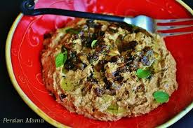1. Asar las berenjenas cortadas en dos mitades en el horno unos 30 minutos a 180º. Pelarlas y dejar la pulpa sobre un colador para que pierda líquido. 2. Cortar en juliana una de las cebollas. Freírla en una sartén con aceite abundante a fuego medio-alto hasta que esté dorada. Sacarla con una espumadera a un plato cubierto con papel de cocina y reservar. 3. Bajar el fuego a medio y en el mismo aceite, rehogar la otra cebolla picada unos 15 minutos. Añadir los ajos picados y la cúrcuma y rehogar 5 minutos más. 4. Poner en un bol la berenjena, la menta, la cebolla y el ajo picados, un poco de su aceite y sal. Aplastar y mezclar bien con un tenedor. 5. Triturar el feta con el yogur y el zumo de la lima. 6. Extender las berenjenas en un plato, regar con la salsa de yogur y terminar con la cebolla en juliana frita y nueces.
Pelar el plátano, trocear y machacar muy bien con un tenedor. Cuando tenga consistencia de papilla, aunque haya algún grumo, es suficiente, por eso es mejor que esté maduro, blandito. Aparte, batir con unas varillas los dos huevos y echar sobre el plátano. Remover muy bien con una cucharada grande hasta tener una masa homogénea.Calentar una plancha o sartén antiadherente, que podemos engrasar ligeramente con mantequilla o aceite neutro.
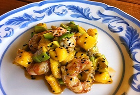Cuando tengamos pochada la cebolla añadimos los Gambones, salteamos un minuto y añadimos la salsa de soja, sin dejar de mover agregamos ahora el mango y aguacate a dados, salteado un minuto solo , añadimos la salsa agridulce y la ralladura de lima y salsa de ostras si nos gusta, prueba y añade una pizca de sal solo si lo necesita, ya que la salsa de soja es muy salada y esparcimos el sésamo negro tostado y a servirlo calentiente !
Agregar un chorrito de aceite a una sartén, echar el pimiento verde cortado en dados medianos y sofreír. Al momento añadir también los ajos y rehogarlos hasta que cambien ligeramente de color. Agregar los langostinos e irlos salteando junto con el ajo y los pimientos. El fuego debe estar a temperatura alta. Añadir el repollo cortado finamente en hilos. Cortar la cebolleta y el tomate en cuadritos pequeños, Cortar el cilantro finamente y agregar al tomate y la cebolla
cocer zanahorias, cuando las zanahorias estén templadas, añadir un poco más de aceite y de vinagre justo antes de tomarlas, mezclar con el perejil y servir.
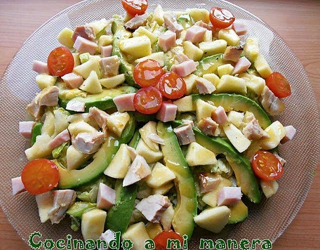Vinagreta:Paso 1Vierte las cucharadas de aceite de oliva en el cuenco. Paso 2 Agrega el vinagre y la sal y Bate bien con la varilla o un tenedor hasta que los tres ingredientes queden perfectamente integrados. Si quieres añadir mostaza, conviene disolver ésta con el aceite antes de añadir el vinagre y la sal.
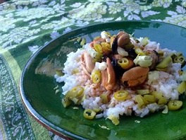Poner el aceite en una olla a fuego muy suave –sin que llegue a borbotear– con el ajo, el laurel, el comino y la pimienta. Mantenerlo 20 minutos al fuego y después dejarlo templar un rato más para que el aceite coja bien el sabor.
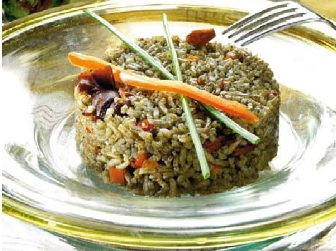Corta la cebolla a cuadraditos pequeños y pica el ajo. Sofríelo todo junto durante 5 minutos. Quita la piel y las pepitas de los tomates, córtalos como la cebolla y añádelos al sofrito durante 5 minutos más. Seguidamente, añade los chipirones y los calamares con la salsa de sus latas, remueve. Déjalos en el fuego 2 minutos para que se integren. Añade el arroz y remuévelo hasta que quede bien integrado. Añade el caldo de pescado o agua y el sobre de tinta (opcional). Pon el fuego alto hasta que empiece a hervir.
Mientras los macarrones hierven, lavamos y cortamos los tomates cherry por la mitad. Llevamos los tomates a una sartén con un buen chorro de aceite de oliva y la punta del diente de ajo bien picada. Mantenemos a fuego medio hasta que los macarrones estén listos. Un minuto antes de retirar los tomates del fuego añadimos las hojas de albahaca
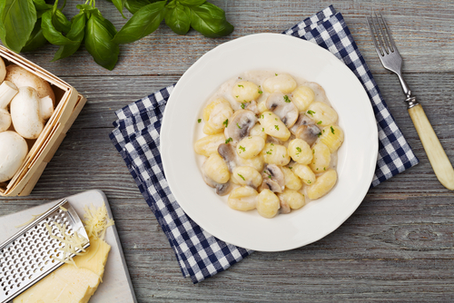En un bol añade las papas y las empapas de aceite, 8 min de estuche, a parte champi con la nata y el queso con romero y pimienta 1 min de estuche, si a esta salsa le añadís unos tacos de pechuga salteada, tendréis un pollo a la gorgonzola.
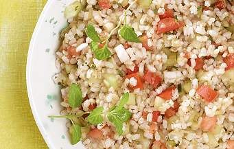Lavar varias veces el arroz integral y lekue 15min, pelar los pepinos y la cebolleta y picar todo en trocitos pequeñitos, Lavar las hojas de menta, secarlas y picarlas bien finas. Exprimir el limón,Colocar las hortalizas en un bol y aderezarlas con el zumo de medio limón y una pizca de sal. Agregar el arroz integral, las hojas de menta y remover todo con cuidado.
Coloca el arroz en un cuenco, cúbrelo con agua fría y escurre sobre un colador. Repite el lavado al menos 4-5 veces, hasta que el agua salga clara. Deja reposar el arroz en el colador 30-40 minutos. Luego vierte el arroz en una cazuela de fondo grueso, cubre con 300 cc. de agua y lleva a ebullición a fuego vivo, con la tapa puesta. Cuando notes que empieza a hervir, sin destapar en ningún momento, baja el fuego y deja cocer a fuego lento de 5 a 7 minutos. Ayuda mucho usar una olla con tapa de cristal, para ver cuando rompe a hervir, aunque si no es así nos orientaremos por el sonido. Apaga el fuego y deja reposar, sin destapar, unos 10 minutos. Aparte bate ligeramente los huevos, que deben ser muy frescos. En una cazuela baja calienta el dashi (consulta su elaboración), junto con el sake, el mirim y la salsa de soja. Cuando rompa a hervir añade el pollo, cortado en trozos pequeños, y deja cocer 5 minutos. Añade entonces los huevos y deja cocer un minuto, remueve un poco y deja cocer tapado otro minuto más, y aparta. Sirve el arroz en cuencos individuales, cubriendo con la mezcla de huevos y pollo, decorando con cebolletas picadas finamente. El secreto de este donburi de pollo y huevo es dejar el huevo muy poco cocinado y jugoso.
Disponer la mitad de los pimientos cortados a dados en una bandeja. Añadir aceite y sal y remover. Para la vinagreta, mezclar aceite de oliva, salsa de soja, miel y mostaza Dijon. Mezclar las lentejas, los pimientos y la vinagreta. Reservar en la nevera. Para emplatar, utilizar la mitad restante de cada pimiento e introducir la ensalada en su interior. Añadir un poco más de vinagreta por encima y unos picatostes.
Batir las anchoas con el tomate las aceitunas y las alcaparras para la salsa
Para prepararlos solo hay que cortar la cebolla pelada en dados y dorarla hasta que se vuelva transparente. Añadir el tomate también cortado en dados, sin el pedúnculo, y darle vueltas durante un par de minutos. Añadir los huevos ligeramente batidos, bajar el fuego al mínimo y añadir el cilantro o el perejil, cuajar al gusto y servir sobre las tortillas. Se pueden rematar con queso o nata agria, aguacate.
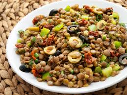Solo hay que cortar el tomate y la cebolla, desmigar el feta, mezclar con el resto de ingredientes, aliñar y sentarse a la mesa.
Solo hay que sentarse a la mesa.
En una cacerola, calentar un par de cucharadas de aceite y añadir las judías pintas. Marearlas 5 minutos a fuego medio y triturar. Saltear también los garbanzos a fuego vivo hasta que estén bien dorados y empiecen a chisporrotear. Apagar el fuego, añadir el caldo y el comino majado en el mortero, y triturar. Para la salsa, picar en trozos pequeños el tomate, la cebolla y el chile (este último sin semillas). Mezclar en un bol, añadir el zumo de 2 limas, sal al gusto y, si se quiere, un poco de cilantro picado. Esparcir 2-3 cucharadas soperas de frijoles o garbanzos en cada tortilla, añadir un poco de queso –el de cabra con los frijoles, havarti con los garbanzos– y dorar por ambos lados en una sartén a fuego medio. Servir inmediatamente acompañado de la salsa pico de gallo.
Pochamos en una cacerola el ajo y la cebolla con un toque de sal. Durante unos 15 minutos a fuego lento.Limpiamos inicialmente bien los boletus. Con un paño húmedo o debajo del grifo. Siempre mejor con un paño pero habrá algunos boletus que necesitaremos usar el grifo porque la tierra estará muy metida en él.Los cortamos en trozos medianos y los incorporamos al guiso. Rehogamos unos minutos. Agregamos la copa de vino blanco y dejamos que se evapore el alcohol unos minutos. Cubrimos con caldo casero de pollo y dejamos guisar unos 15 minutos. Servimos con un poco de cebollino o alguna hierba fresca por encima ya que le aportará un poco de frescor al plato.